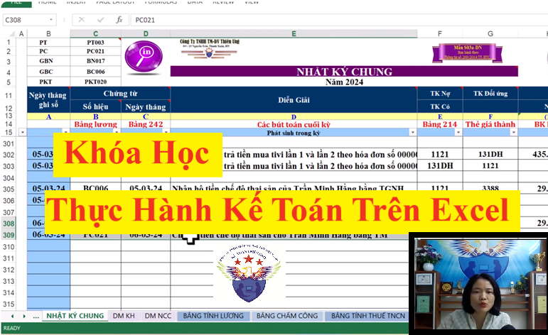
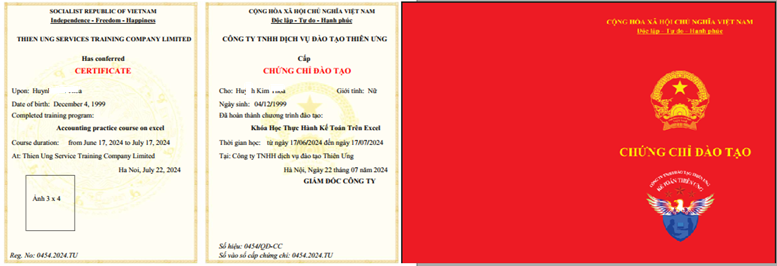

Khóa Học Thực Hành Kế Toán Trên Excel của công ty đào tạo Kế toán Diệu Tâm là khóa học chuyên sâu về dạy cách lên sổ sách, lập báo cáo tài chính cuối năm bằng hóa đơn chứng từ thực tế
1. Công cụ học và thực hành:
+ Công cụ lên sổ, lập báo cáo: File Excel "Mẫu hệ thống sổ sách kế toán trên Excel"
Trong file này có đầy đủ các mẫu biểu sổ sách, chứng từ dùng cho công tác kế toán trong doanh nghiệp. Cho phép tạo lập và in các chứng từ như phiếu thu/chi/nhập/xuất... một cách tự động và hàng loạt (rất nhanh và tiện dụng).
+ Tài liệu thực hành: là các hóa đơn, chứng từ với nhiều nghiệp vụ kinh tế phát sinh trong doanh nghiệp thực tế, để giảng viên hướng dẫn các bạn xử lý nghiệp vụ trước khi đưa số liệu lên sổ sách kế toán.
2. Thời gian học:
+ Tổng thời gian giảng dạy của "Khóa Học Thực Hành Kế Toán Trên Excel": 10 buổi chính thức
(Ngoài 10 buổi chính thức này thì đối với "Khóa Học Thực Hành Kế Toán Trên Excel", công ty đào tạo Kế toán Diệu Tâm còn xây dựng thêm 4 video bổ trợ để bổ sung các kiến thức kỹ năng cho việc lên sổ sách, lập BCTC tại doanh nghiệp thực tế của bạn)
- Thời gian học trong ngày: Có 3 ca cho bạn lựa chọn: Sáng: 8h30 – 11h, Chiều: 2h – 4h30, Tối: 7h – 9h30
- Thời gian học trong tuần: Bạn có thể lựa chọn học vào các ngày thứ 2-4-6 hoặc các ngày thứ 3-5-7
3. Hình thức đào tạo: Online (dạy trực tuyến qua mạng)
3. Hình thức đào tạo: Online (dạy trực tuyến qua mạng)

(Có giảng viên trực tiếp đứng lớp hướng dẫn thực hành và có giáo viên lưu động để hỗ trợ giải đáp các vướng mắc trong quá trình học của bạn)
4. Giảng viên đào tạo: Đều là những kế toán Trưởng, kế toán Tổng hợp đã và đang đi làm thực tế, có nhiều năm kinh nghiệm và đã có chứng chỉ nghiệp vụ sư phạm để có khả năng truyền dạy tốt nhất.
Cách tương tác với giáo viên như sau: Khi bắt đầu vào học giáo viên sẽ cung cấp cho bạn: số điện thoại, Zalo, email để bạn đặt câu hỏi, hỗ trợ, tư vấn, giải đáp các vướng mắc của bạn
Ngoài giáo viên đang trực tiếp đứng lớp giảng dạy chính thì công ty còn có giáo viên lưu động khác để bạn có thể tương tác, trao đổi, nhờ hỗ trợ trong lúc đang học và ngoài giờ học (thông tin liên hệ này sẽ được cung cấp trong mail thông báo lịch học và trên màn hình trong lúc học)
5. Sơ lược về chương trình đào tạo của “Khóa học thực hành kế toán trên Excel”:
+ Thực hành xử lý các nghiệp vụ kế toán, hoàn thiện hồ sơ chứng từ kế toán trước khi thực hiện ghi sổ kế toán.
+ Thực hành làm bảng chấm công, tính lương, trích bảo hiểm, phân bổ chi phí trả trước, trích khấu hao tài sản cố định, lập bảng tổng hợp Nhập - Xuất - Tồn kho, tính giá xuất kho, theo dõi công nợ...
+ Thực hành lập các loại sổ sách như: Sổ nhật ký chung, công nợ phải thu, phải trả, sổ chi tiết, sổ tổng hợp, sổ cái, sổ quỹ tiền mặt, sổ tiền gửi ngân hàng…
+ Chia sẻ cách xử lý các tình huống về sổ sách kế toán trong doanh nghiệp thực tế, cách kiểm tra đối chiếu sổ sách kế toán vào cuối năm trước khi lên BCTC
+ Thực hành lập các loại sổ sách như: Sổ nhật ký chung, công nợ phải thu, phải trả, sổ chi tiết, sổ tổng hợp, sổ cái, sổ quỹ tiền mặt, sổ tiền gửi ngân hàng…
+ Chia sẻ cách xử lý các tình huống về sổ sách kế toán trong doanh nghiệp thực tế, cách kiểm tra đối chiếu sổ sách kế toán vào cuối năm trước khi lên BCTC
+ Thực hành lập báo cáo tài chính cuối năm
+ Chia sẻ cách kiểm tra, đối chiếu số liệu trên sổ sách kế toán và cách khắc phục, điều chỉnh các sai sót (nếu có)...
6. Học phí của “Khóa học thực hành kế toán trên Excel”:
Học phí chưa khuyến mại là: 1.200.000đ
Đang có khuyến mại 200.000đ
=> Học phí sau khuyến mại còn: 1.000.000đ (Học phí này đã bao gồm tiền tài liệu và làm chứng chỉ => Bạn không phải đóng thêm khoản phí nào trong quá trình học nữa)
7. Về học bù, học lại khi bận, khi nghỉ:
+ Học bù: bạn có việc bận đột xuất phải nghỉ buổi học nào đó thì bạn được sắp xếp lớp học bù buổi đó
+ Học lại: Bạn có thể đăng ký học lại 1 buổi, hoặc 1 số buổi nào đó, hoặc cả khóa. Bạn có thể học lại 1 lần hoặc nhiều lần đến khi bạn cảm thấy tự tin, đã nắm vững kỹ năng thì thôi
---------------------------------------
Công ty đào tạo Kế toán Diệu Tâm cam kết:
Không giới hạn thời gian thực hành, sẽ dạy cho bạn đến khi làm được việc một cách thành thạo
Khi đăng ký học bù học lại bạn sẽ không phải đóng thêm học phí
-----------------------------------------------------
8. Đối tượng tham gia “Khóa học thực hành kế toán trên Excel”:
Dành cho các bạn đã biết về định khoản, hạch toán chuẩn rồi thì mới tham gia được khóa học này
(Vì khóa học này dạy trực tiếp vào thực hành thực tế mà không dạy lại phần lý thuyết định khoản cơ bản)
(Vì khóa học này dạy trực tiếp vào thực hành thực tế mà không dạy lại phần lý thuyết định khoản cơ bản)
Còn nếu bạn chưa học gì về kế toán hoặc bạn đã học về kế toán rồi nhưng lâu không dùng nên bị quên phần định khoản hạch toán thì bạn có thể:
+ 1 là bạn có thể đăng ký thêm "Khóa học Nguyên Lý Kế Toán Thực Tế" để học cách định khoản hạch toán chuẩn trước rồi mới chuyển sang học phần thực hành kế toán trên Excel này
+ 1 là bạn có thể đăng ký thêm "Khóa học Nguyên Lý Kế Toán Thực Tế" để học cách định khoản hạch toán chuẩn trước rồi mới chuyển sang học phần thực hành kế toán trên Excel này
Chi tiết về chương trình đào tạo của “Khóa học Nguyên Lý Kế Toán Thực Tế” thì các bạn xem tại đây:
Khóa Học Nguyên Lý Kế Toán
+ 2 là bạn có thể chuyển sang học “Khóa học kế toán tổng hợp trọn gói” để được học đầy đủ các kiến thức kỹ năng làm kế toán trong doanh nghiệp thực tế từ Làm kế toán thuế cho đến lên sổ sách, lập BCTC
Tại khóa học kế toán tổng hợp trọn gói này thì các bạn cũng sẽ được học cách định khoản hạch toán chuẩn trước rồi mới chuyển sang học thực hành thực tế
Chi tiết về chương trình đào tạo của “Khóa học kế toán tổng hợp trọn gói” thì các bạn xem tại đây:
Khóa học kế toán tổng hợp trọn gói (dành cho người mới bắt đầu hoặc đã học nhưng bị quên phần định khoản hạch toán)
9. Lịch khai giảng:
Các lớp học thực hành kế toán online của Công ty TNHH Tư vấn & Đào tạo Diệu Tâm đều được khai giảng thường xuyên trong tuần
10. Cấp chứng chỉ:
Sau khi học xong bạn sẽ được cấp chứng chỉ hoàn thành "Khóa Học Thực Hành Kế Toán Trên Excel"

11. Quy trình đặng ký học
Bước 1: Gọi điện hoặc chát zalo theo số điện thoại 0987.026.515 để được tư vấn hỗ trợ ban đầu về thông tin các khóa học, lựa chọn khóa học phù hợp. (Bạn hãy lưu lại số điện thoại này để được hỗ trợ khi cần)
Bước 2: Làm theo những hướng dẫn để hoàn tất việc đăng ký học Online.
+ Đọc, xác nhận nội quy tham gia khóa học kế toán online
+ Chuyển khoản tiền học phí
+ Cung cấp chính xác các thông tin để nhận tài liệu gồm: Email để nhận file mềm, địa chỉ nhà (hoặc cơ quan) để nhận giáo trình bản cứng từ Ship.
Bước 3: Nhận tài liệu và lịch khai giảng khóa học đã đăng ký.
Bước 4: Xem trước tài liệu và các video bổ trợ cho khóa học để khi đi học đạt chất lượng tốt nhất.
Bước 5: Tham gia khóa học theo lịch khai giảng, lịch học đã được thông báo qua mail tại bước 3
----------------------------------------------------
Để biết thông tin chi tiết về khóa học thì các bạn vui lòng liên hệ với số Hotline của Kế toán Diệu Tâm nhé:
.png "Số Hotline tư vấn khóa học của Kế toán Diệu Tâm")
--------------------------------------------------------------
Công ty đào tạo Kế toán Diệu Tâm có đôi lời chia sẻ thêm với các bạn như sau:
Trong "Khóa học thực hành kế toán trên Excel" không bao gồm nội dung hướng dẫn về hướng dẫn cách cách làm tờ khai báo cáo thuế trên phần mềm HTKK
=> Do vậy, nếu bạn muốn học cả phần thực hành làm các loại tờ khai báo cáo thuế, quyết toán thuế cuối năm nữa thì bạn có thể tham khảo thêm khóa học thực hành kế toán thuế tại đây:
"Khóa học thực hành kế toán thuế"
(Khóa thuế chuyên sâu này dạy thực hành xử lý hóa đơn chứng từ kế toán, cách kê khai làm cáo cáo thuế hàng tháng, hàng quý và quyết toán thuế cuối năm. Chia sẻ các kỹ năng, kinh nghiệm xử lý tình huống kế toán thuế trong doanh nghiệp thực tế, cách cân đối lãi lỗ, tiết kiệm số tiền thuế phải nộp...)